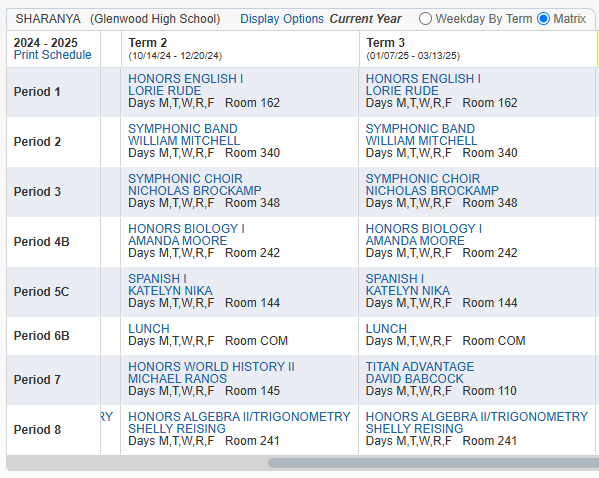
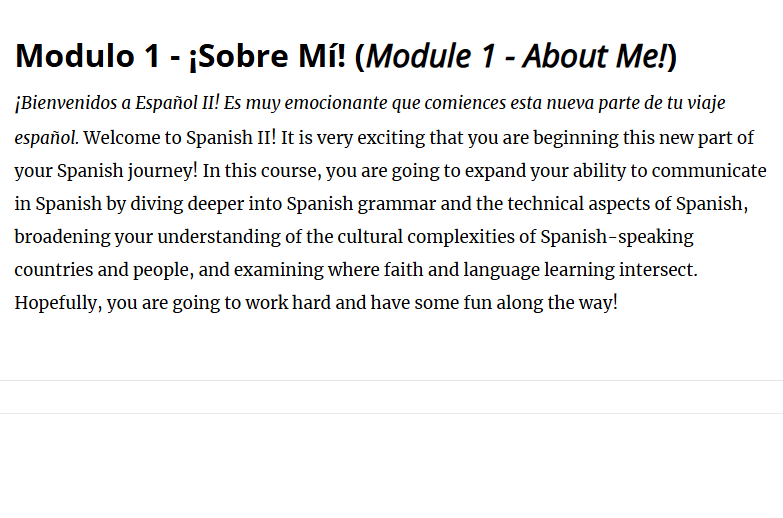
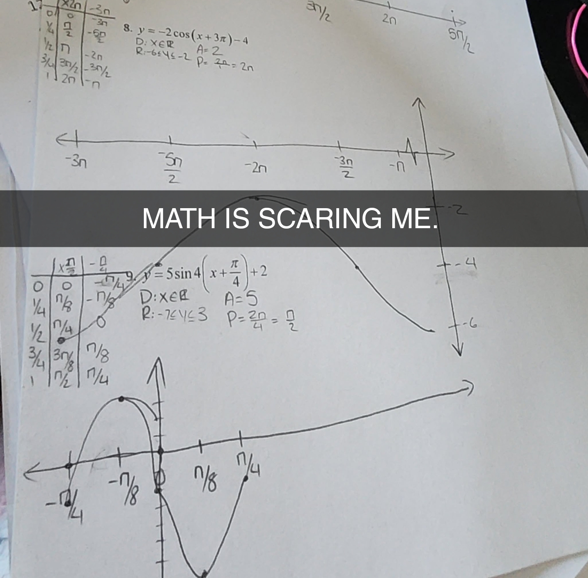
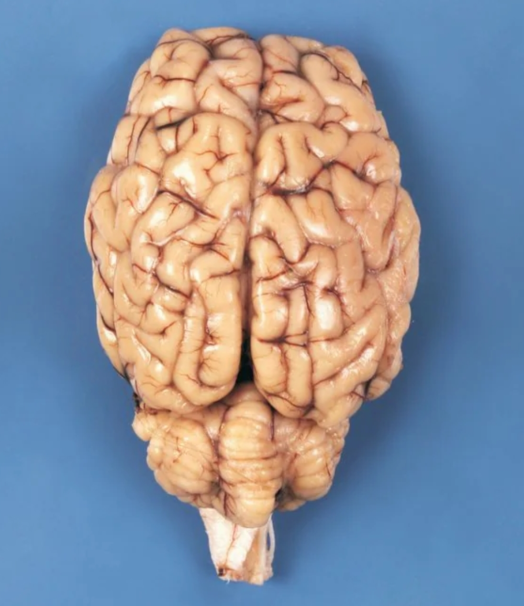
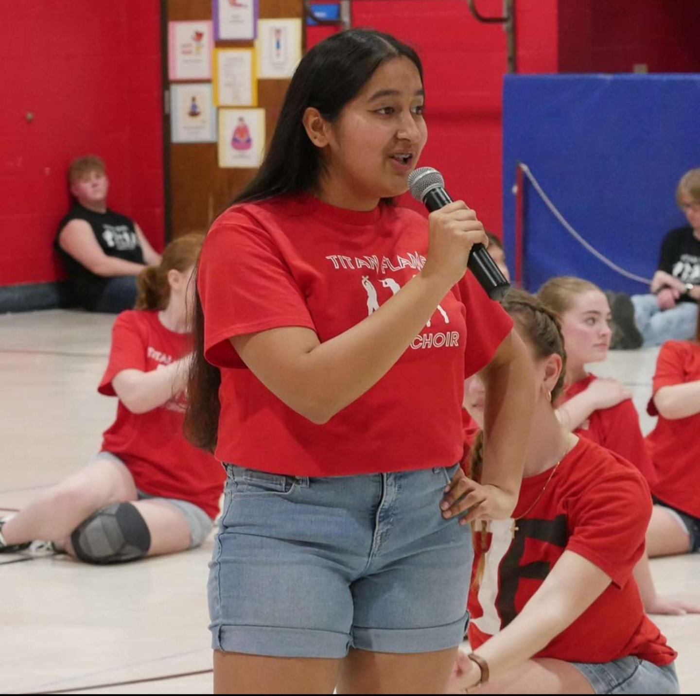
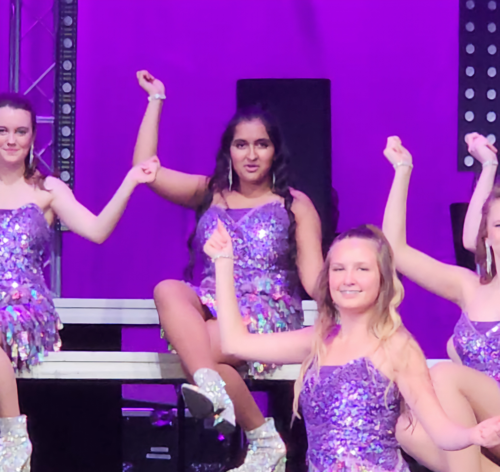
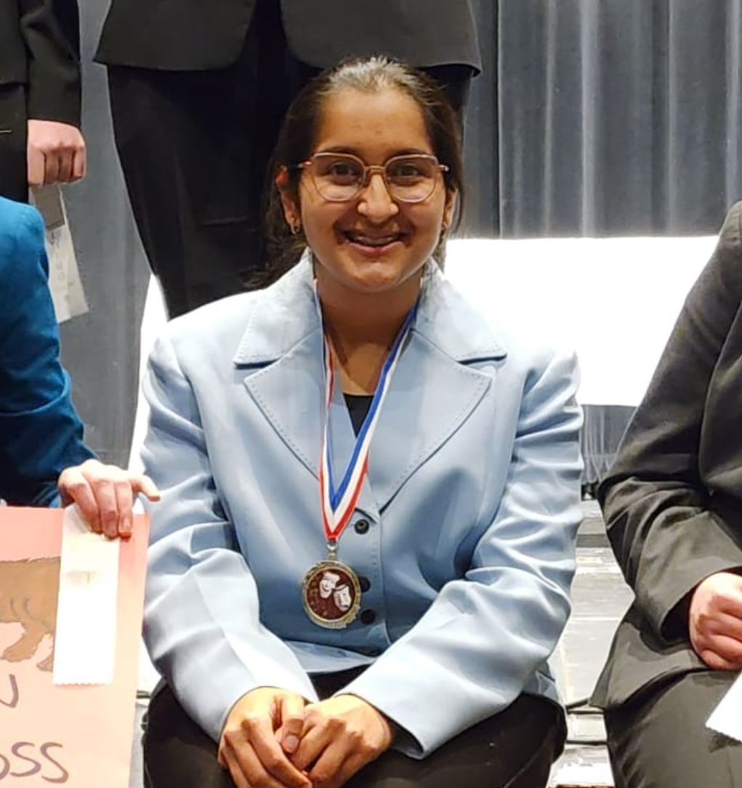

Course Selections
Sunday April 20, 2025.
Today was an average day at home, not particularly productive, but not entirely wasted away. Instead of going on and on about boring random things I did, I think it’s a good idea to discuss my classes for freshman year instead. The first thing is the required English credit for four years. Your options for freshman year are Honors English I and College Prep (CP) English I. I took the Honors/AP track and have Ms. Rude for first hour Honors English I. She’s one of the sweetest teachers I have ever met and I love her so much. She also introduced me to Speech and Debate, which I highly recommend. For math you have four options depending on what you took in eighth grade; Algebra IA, Algebra I, Geometry, and Honors Algebra II/Trigonometry. I am currently in Algebra II/Trig, and it’s a lot of work and learning every single day. For science you have three options depending again upon what you took in eighth grade; Physical Science, Biology I, and Honors Biology. I am currently taking Honors Biology, and somehow it’s even more work than Algebra II/Trig. Lastly is Social Studies, in which you again have four options for semester long courses. I only took one semester of Honors World II this year, and it was very interesting. I decided not to take another semester of World History because I needed to take Driver’s Ed this year as well. I think picking classes can be overwhelming unless you choose to do your research from the online course book and remain determined with the path you pick.


Self-Studying Spanish II
Monday April 21, 2025.
I spent all of today self-studying a course from home. I am enrolled in Spanish I at Glenwood, though I already know most of it from Spanish at Springfield Christian. I decided to try my luck and ask to enroll in Spanish II over the summer so that I could take Honors Spanish III next year. It took me a while to convince the Foreign Language Department and administration to allow me to take Spanish II over the summer, but when they finally agreed, I enrolled as fast as I could and the course started in March. I really enjoy learning foreign languages and I am fluent in French and Hindi. I think knowing multiple languages is something that can help me stand out not only on college applications, but also when it comes time to apply for jobs. I highly recommend taking at least two years of Spanish in high school - it’s going to be worth it.
Textual Evidence
Tuesday April 22, 2025.
It’s currently Wednesday morning, because I was so tired last night I was unable to finish my log for the day. I got home from school around 4pm because Jazz Lab Band got canceled (Mitchell got sick) and took a quick power nap so that I would be well rested for a Fever/Flame combined rehearsal - the last one before our dress rehearsal for Dessert Theatre. As soon as I got home around 8:45 I ate dinner and got started on my homework. It took quite a while because Trigonometry is getting harder and I had to reread part of 1984 to get textual evidence for a worksheet. In the end I went to bed around 12:30 and instantly fell asleep.


How To Take 2 Days Off School and NOT Drown in Homework After :)
Wednesday April 23, 2025.
Today was a big work day for me, specifically to get ahead, because the next two days are going to be super busy with lots of events including Show Choir Tour, Dessert Theatre, Speech Banquet, and Jazz Café. I made sure to let all my teachers know if and when I’d be missing their classes and requested my work early so I could get it done. I did have to sacrifice some of my sleep, but I’d do it again for the deadlines. Finals season is approaching and the last thing I need on my plate is missing work. I had to attend a Medical Club meeting after school and we had some ladies visit us from Lincoln Land Community College to teach us about the cardio and respiratory systems and show us two real sheep brains, two full sets of pig lungs, and a human’s right lung. The meeting was incredibly informational and I highly recommend the club to anyone considering a career in medicine or with an interest in anatomy, physiology, or biology.
<- Sheep Brain
Happy Show Choir Tour!
Thursday April 24, 2025.
This morning the entire show choir program reported to Chatham Elementary at 7:45 am sharp. Today was the first day of Show Choir tour and our first stop of the day was CES. We had to perform twice for them because of how many kids they had and the limited gym space they sat in, but it was a sentimental moment to all the kids who went to CES. I, on the other hand, used this as an excuse to rehearse our show because I, unfortunately, have no sentimental value toward any of the schools we are going to. I returned to GHS for third hour (Symphonic Choir) and half of fourth hour (Honors Bio) which was a relief because I would be thoroughly cooked without hearing the lecture for the Nervous System today. We left just after 12pm again to go to Ball Elementary. Since BES has a larger gym we only performed one show for them and made it back to GHS just in time for 8th hour to start. Overall today was an incredibly tiring day including the very boring dress rehearsal we had after school for Dessert Theatre (I will spare you the details; we sat in the auditorium for 45 minutes and went overtime by 15), and getting all my homework done, but I feel like today was a great example of a day that was a healthy and nice mix of fun, learning, boring, exciting, and, unfortunately, homework. (No, you will never escape the last one)


Show Choir Tour Again (Plus Other Things)
Friday April 25, 2025.
It is currently not Friday the 25th, and I assure you it’s been a while since Friday the 25th, but this weekend has been so exhausting that to be completely honest, I spent a while sleeping. I went to school (completely normal), learned things (completely normal), left halfway through the day (completely normal?), walked across the street to the elementary school (not so normal anymore), and met up with the Show Choirs at Glenwood Elementary. It was one of the best things ever, because for the first time, I actually knew some of the kids watching me! Four, to be exact. As exhausting as it was, I always find the wholesome little high-five tunnels to light up my day as little tiny kids (they’re not much shorter than me anymore) walk through a long passageway of high-fives. After barely surviving through eighth hour math, I got to Vocal Jazz Project; our last rehearsal before the insanity of the weekend. As soon as I got home I started doing my hair and makeup for Dessert Theatre. The rest of the night was a complete blur, between performing, helping others with hair and makeup, and the emotions that come with one of my last performances ever on that stage as a part of Titan Flame. As soon as I got home, I collapsed and fell asleep for a long, long, time.
Guess what? I didn’t sleep for a long, long time...
Saturday, April 26, 2025.
It’s still not Saturday the 26th, and I was incredibly sleep deprived. It’s okay, though, because future me is telling you I survived the weekend. I woke up early to wash my hair and get ready for Speech Banquet. I honestly had no clue what to expect, but it was definitely better than what I was expecting. A bunch of kids, all with similar interests, meet up for two hours of fun, eating, and awards. I got my Varsity Letter (big hooray as Show Choir took up most of my speech season :D), and received my senior superlative. Shout out to Layne Rude for calling me “most likely to become a famous singer”! The moment I got home I put my hair in heatless curls because there was no way I was about to put more heat in my hair today. The second day of Dessert Theatre was definitely more emotional with all the seniors tearing up on their last performance ever. I got home and immediately fell asleep again, Double shout out to my parents for going through all of this with me and still making sure I eat dinner before going to sleep, I love you guys!
Here's a picture of me from our home tournament ->
